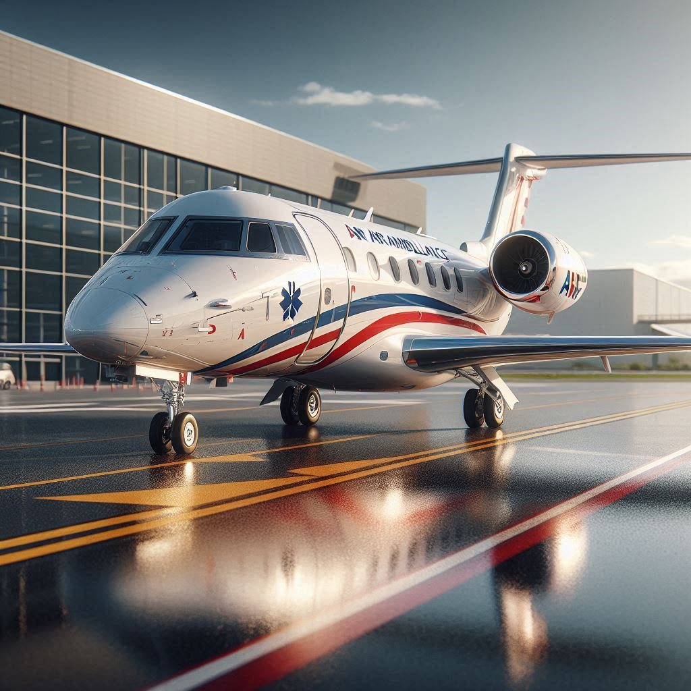
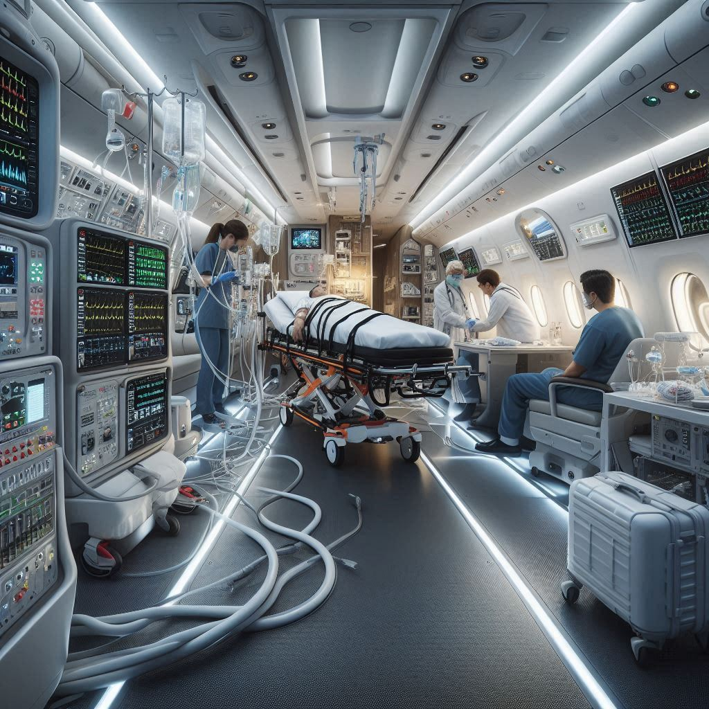

Helicopter Ambulance
Rapid response for short-range critical emergencies and remote rescues. Our helicopters are equipped with full ICU capabilities for immediate stabilization and fast transport.
Know More
Fixed Wing Ambulance
Long-distance and interstate patient transfers using pressurized aircraft. Ideal for stable transport over long distances with continuous ICU monitoring and hospital-grade equipment.
Know More
ICU on Air
Advanced life support systems including ventilators, cardiac monitors, and infusion pumps. We bring the hospital's intensive care unit to the sky for every critical mission.
Know More
Medical Escort
Professional medical assistance for patients traveling on commercial flights. Our specialized doctors and nurses ensure safety throughout the journey from pickup to hospital handover.
Know MoreInternational Transfers
Global medical repatriation and evacuation services. We handle all logistics, clearances, and medical coordination for cross-border transfers across the world.
Know More